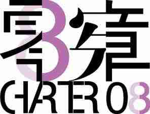

<!DOCTYPE html PUBLIC "-//W3C//DTD XHTML 1.0 Transitional//EN" "http://www.w3.org/TR/xhtml1/DTD/xhtml1-transitional.dtd">
<html xmlns="http://www.w3.org/1999/xhtml">

<!-- Mirrored from web.archive.org/web/20190506040117/http://www.2008xianzhang.info/template.php?xuhao=1675 by HTTrack Website Copier/3.x [XR&CO'2014], Sun, 07 Sep 2025 21:54:46 GMT -->
<head><script type="text/javascript" src="https://web-static.archive.org/_static/js/bundle-playback.js?v=FC38Hc5A" charset="utf-8"></script>
<script type="text/javascript" src="https://web-static.archive.org/_static/js/wombat.js?v=txqj7nKC" charset="utf-8"></script>
<script>window.RufflePlayer=window.RufflePlayer||{};window.RufflePlayer.config={"autoplay":"on","unmuteOverlay":"hidden","showSwfDownload":true};</script>
<script type="text/javascript" src="https://web-static.archive.org/_static/js/ruffle/ruffle.js"></script>
<script type="text/javascript">
    __wm.init("https://web.archive.org/web");
  __wm.wombat("../php/template515c.php?xuhao=1675","20190506040117","https://web.archive.org/","web","https://web-static.archive.org/_static/",
	      "1557115277");
</script>
<link rel="stylesheet" type="text/css" href="https://web-static.archive.org/_static/css/banner-styles.css?v=p7PEIJWi" />
<link rel="stylesheet" type="text/css" href="https://web-static.archive.org/_static/css/iconochive.css?v=3PDvdIFv" />
<!-- End Wayback Rewrite JS Include -->

<meta http-equiv="Content-Type" content="text/html; charset=utf-8"/>

<!DOCTYPE html PUBLIC "-//W3C//DTD XHTML 1.0 Transitional//EN" "http://www.w3.org/TR/xhtml1/DTD/xhtml1-transitional.dtd">
<html xmlns="http://www.w3.org/1999/xhtml">
<head>
<meta http-equiv="Content-Type" content="text/html; charset=utf-8"/>
<title>Untitled Document</title>
</head>

<body>


</body>

<!-- Mirrored from web.archive.org/web/20190506040117/http://www.2008xianzhang.info/template.php?xuhao=1675 by HTTrack Website Copier/3.x [XR&CO'2014], Sun, 07 Sep 2025 21:54:47 GMT -->
</html>
<title> 独立中文笔会关于会员刘飞跃和荣誉会员王全璋被判刑的抗议声明</title>

<style type="text/css">
<!--
body {
	background-color: #CFF;
}
body,td,th {
	color: #000;
}
h6 {
	font-size: x-large;
	color: #00F;
}
-->
</style></head>

<body>
<hr align="center" width="1240" color="#0000ff" noshade="noshade"/>
<table width="1240" border="0" align="center">
  <tr>
    <td width="200">&nbsp;</td>
    <td width="139"></td>
    <td width="683"><h6>独立中文笔会关于会员刘飞跃和荣誉会员王全璋被判刑的抗议声明&nbsp;</h6></td>
    <td width="200">&nbsp;</td>
  </tr>
  <tr>
    <td>&nbsp;</td>
    <td colspan="2">20190201&nbsp;</td>
    <td>&nbsp;</td>
  </tr>
  <tr>
    <td height="98">&nbsp;</td>
    <td colspan="2"> <p><textarea rows="32" cols="105" style="font-size:10pt; color:blue; ">2019年1月29日

独立中文笔会惊悉：本会会员、《民生观察》负责人刘飞跃，今天被湖北省随州市中级人民法院以“煽动颠覆国家政权罪”判处有期徒刑五年，剥夺政治权利三年，并没收个人财产人民币101万元；本会荣誉会员、人权律师王全璋，昨天被天津市第二中级人民法院以“颠覆国家政权罪”判处有期徒刑四年六个月，剥夺政治权利五年。

独立中文笔会对这两项判决表示強烈抗议，严厉谴责中国有关当局肆意侵犯公民言论、出版、集会、结社自由等基本人权，践踏确认保障公民权利的中国宪法和中国政府已签署的国际公约。同时，本会呼吁国内外各界：严重关注中国当局滥用政治罪名实施人权迫害，积极敦促中国当局尽快纠正此错案，立即无条件释放刘飞跃、王全璋及所有其他因言获罪的良心犯。

刘飞跃，现年48岁，出生于湖北省随县（现随州市），曾任职教师。从学生时代起，刘飞跃就一直关注中国社会问题，努力探索促进中国人权改善和民主之路，此后更无惧风险身体力行投身到人权事业中。1996年，他撰写《中南海是中国腐败的根源》，遭当局拘留15天。1998年，他曾参与组建中国民主党湖北省党部。1999-2002年，他致力于非暴力理论研究，发表一系列有关非暴力的文章；并于2003年开始投身于推进中国人权、民主的非暴力运动。2005年10月，刘飞跃创办维权网站《民生观察》，记录、发布各种政府侵权事件和民间维权抗争事件，广泛关注中国社会民生、民权、法治等问题，涉及访民、各类职业病患者、被精神病群体、异议人士、法轮功信仰群体等。由于他长期坚持关注弱势群体、揭露当局非法侵害人权的行径，遭当局一系列报复，他先失去了教师工作，后被常年监控，被警方约谈、传唤成为家常便饭，敏感时期被限制人身自由。刘飞跃参与联署《零八宪章》，多次接受境外媒体采访支持刘晓波获诺贝尔和平奖并呼吁释放他。2011年8月2日，他因参与温州723动车追尾事件死难者“头七”纪念活动，被当局指派的维稳人员打伤，报警后警方竟不立案，也不予出具验伤报告。自2014年起，刘飞跃每年撰写发表《中国维稳与人权年终报告》和《中国精神健康与人权年终报告》。2016年11月17日，刘飞跃在家中突然被随州市警方带走，次日被搜家，家属被口头告知，刘因“收受境外资助，涉嫌危害国家安全”被刑事拘留，关押于随州市看守所；2016年12月23日，刘飞跃被以涉嫌“煽动颠覆国家政权罪”正式逮捕；检察院在多次退回补充侦查后，于2017年12月6日正式向法院起诉，起诉书所列的罪状是：撰写发表“非暴力”系列文章、关于“中国维稳与人权”、“被精神病与人权”的6个年度报告（总结）、关于敏感事件的评论文章等，组织策划发表漫画、海报，接受境外媒体采访；开办《民生观察》网站，与境外机构、组织合作，申请接受境外资金资助，“以造谣、诽谤等方式煽动颠覆国家政权、推翻社会主义制度”。2018年8月7日，湖北随州市中级人民法院开庭审理刘飞跃案，2019年1月29日正式宣判。

王全璋，现年42岁，出生于山东省五莲县，网名王全璋。他2000年在山东大学法学院毕业，任职于山东省图书馆，2003通过司法考试，2007年开始律师执业，曾先后任北京振邦律师事务所律师和北京锋锐律师事务所律师。他曾以笔名“高峰”在网上发表数十篇时政评论，于2008年被国安人员抄家。后到“世界与中国研究所”工作，参与写作有关《互联网与公民运动》、《中国律师在自由民权运动中的角色》等观察报告。他为维护言论自由和健全中国法治，积极维护弱势群体利益，曾在山东省济南市尹家林社区学校为底层农民村民辅导，开设农民土地权益课程，后又与北京人权机构合作，为维权者提供法律服务，还协助外国电视台对敏感案件的采访。他以执业律师代理过多起敏感案件，如山东省维权记者齐崇怀（本会荣誉会员）案、原深圳市三级警督王登朝案、江苏省法轮功学员朱亚年作案、黑龙江省佳木斯市建三江农垦局“建三江事件”律师案等，多次遭当地警方的暴力殴打、虐待和短期关押和行政拘留，以至于被迫辞去律师职务。2015年7月10日，在“709维权律师大抓捕事件”中，王全璋被北京警方以涉嫌“寻衅滋事”和“煽动颠覆国家政权”刑事拘留，8月4日改为关押在不明指定地点监视居住；2016年1月8日，又被天津警方改以涉嫌“颠覆国家政权罪”正式逮捕。2017年2月14日，他被天津市人民检察院起诉指控“利用律师身分，多次接受境外组织资金支援，向境外提供攻击内地法治和人权状况的材料，又炒作热点事件，利用舆论挑起不明真相的人仇视政府”。在长达三年多的超期羁押和审讯期间，据报他曾惨遭酷刑折磨，数次遭强电流袭击以致当场昏厥，生命垂危，且律师和家属会见权、知情权及探视权等均被剥夺；因拒绝配合官方认罪，自请律师一再被官方拒绝，羁押地点多次被更换，目前关押于天津市第一看守所。2018年12月26日，天津市第二中级人民开庭闭门审理王全璋案，2019年1月28日正式宣判。

笔会一直十分关注王全璋案和刘飞跃案，在2015年12月《纪念国际人权日声明》中公布授予王全璋等27位狱中作家和“709律师” 为本会重点营救的荣誉会员；2016年11月发出《关于会员刘飞跃被强迫失踪的抗议声明》；2018年11月15日发出《“狱中作家日”新闻公报》，授予刘飞跃和荣誉会员唐荆陵第九届“刘晓波写作勇气奖”，“以表彰他们长期坚持关注和维护弱势群体的基本人权，倡导和推动非暴力抗争的勇气和奉献”。

独立中文笔会认为：中国有关当局根据起诉书判定刘飞跃和王全璋的全部“犯罪行为”，都属于根据宪法第三十五条和平行使公民言论、出版、集会、结社自由权。当局对他们的抓捕、关押、指控、起诉、定罪和判刑，完全是以言论罪的政治迫害，是再次公然践踏相关国际法和人权公约并违反中国宪法和刑事法规的非法行径。

独立中文笔会对两判决表示强烈抗议，并呼吁国内外各界督促中国有关当局：

一、尽快纠正此两错案，立即无条件释放本会会员刘飞跃和荣誉会员王全璋，并在释放前保障他们的一切合法权益。

二、立即无条件释放本会会员秦永敏、胡石根、吕耿松、陈树庆、黄晓敏、周远志、徐琳、桂民（敏）海、刘艳丽（女）、王怡，释放包括本会荣誉会员姚文田、王炳章、伊力哈木、买买提江、古丽米拉（女）、陆建华、张海涛、海莱特、赵海通、王喻平、刘贤斌、陈西、陈卫、李铁、李必丰、吴淦、唐荆陵、郭飞雄、董如彬、贡却才培、扎西文色、谢文飞、王默、陈云飞、刘少明、孙峰、甄江华、黄文勋、江天勇、余文生等在内的所有因言获罪的良心犯。

独立中文笔会是国际笔会——世界上最悠久的人权组织和国际性文学组织的157个成员分会之一，致力于维护全球中文作家的言论和写作自由，维护世界各地因从事其专业工作而遭监禁、威胁、迫害或打压的作家和新闻工作者的权益。关于笔会致力于保护作家和维护言论自由的更多信息，请参见https://www.chinesepen.org.

来源：独立中文笔会</textarea><br/>
    </p></td>
    <td>&nbsp;</td>
  </tr>
  <tr>
    <td rowspan="2">&nbsp;</td>
    <td colspan="2" align="center">&nbsp;</td>
    <td rowspan="2">&nbsp;</td>
  </tr>
  <tr>
    <td colspan="2" align="center"></td>
  </tr>
</table>
<hr align="center" width="1240" color="#0000ff" noshade="noshade"/>
</body>
</html>
<!--
     FILE ARCHIVED ON 04:01:17 May 06, 2019 AND RETRIEVED FROM THE
     INTERNET ARCHIVE ON 18:26:41 Sep 07, 2025.
     JAVASCRIPT APPENDED BY WAYBACK MACHINE, COPYRIGHT INTERNET ARCHIVE.

     ALL OTHER CONTENT MAY ALSO BE PROTECTED BY COPYRIGHT (17 U.S.C.
     SECTION 108(a)(3)).
-->
<!--
playback timings (ms):
  captures_list: 0.851
  exclusion.robots: 0.033
  exclusion.robots.policy: 0.015
  esindex: 0.013
  cdx.remote: 100.129
  LoadShardBlock: 1389.68 (3)
  PetaboxLoader3.datanode: 1361.181 (4)
  load_resource: 39.138
-->